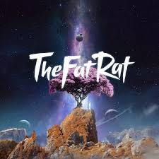
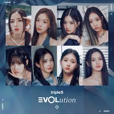
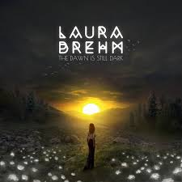
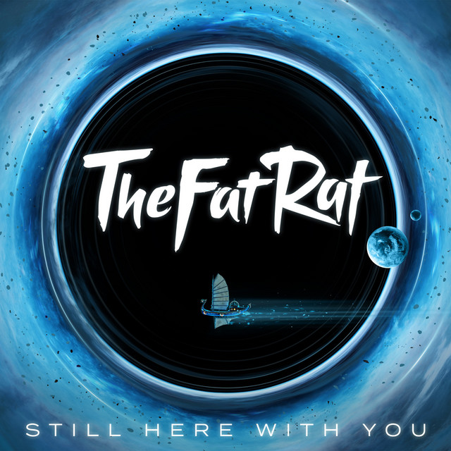
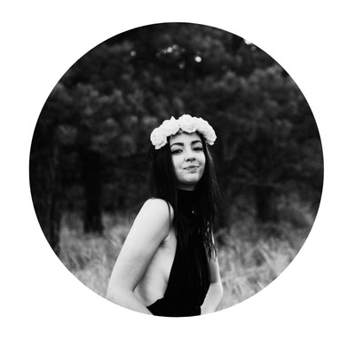
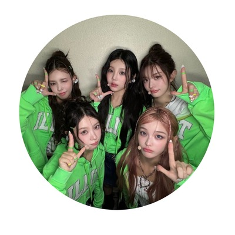
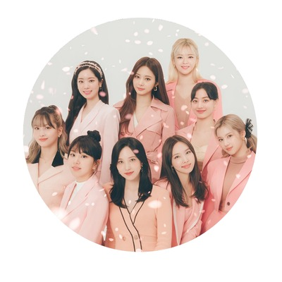
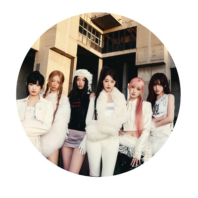
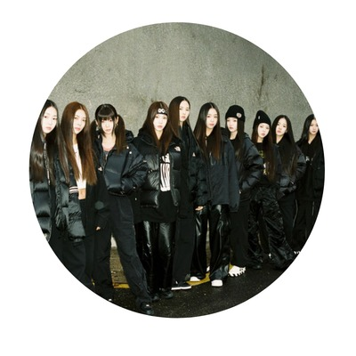

Still Dark

Synthpop

Me

With You
(O melhor possível)
Artistas favoritos
TheFatRat é um produtor musical alemão de música eletrônica. Com décadas de experiência, é conhecido por seu single de maior sucesso, Unity (2014), que acumula bilhões de visualizações, e por permitir o uso gratuito de suas músicas pela internet.

Laura Brehm é conhecida por colaborar como vocalista em diversas músicas eletrônicas lançadas pelas gravadoras NCS e Monstercat, além de suas memoráveis colaborações com TheFatRat.

ILLIT é um quinteto feminino musical sul-coreano que estreou em 25 de março de 2024 pela gravadora BE:LIFT LAB, formado pelo programa competitivo R U NEXT?. Constituído por Moka, Yunah, Minju, Iroha e Wonhee, as garotas são extremamente populares entre os grupos femininos da quinta geração, com sua estética onírica e fofa.

TWICE é um grupo feminino musical sul-coreano que estreou em 20 de outubro de 2015 pela gravadora JYP Entertainment, formado pelo programa competitivo Sixteen. Jihyo, Nayeon, Jeongyeon, Momo, Sana, Chaeyoung, Dahyun, Tzuyu e Mina constituem um dos maiores grupos de K-Pop da terceira geração e de todos os tempos, mantendo mais de 10 anos de carreira com lançamentos frequentes, popularidade global e quebrando inúmeros recordes.

IVE é um sexteto feminino musical sul-coreano que estreou em 1 de dezembro de 2021 pela gravadora Starship Entertainment. Liz, Leeseo, Wonyoung, Rei, Gaeul e Yu-jin integram um dos maiores grupos femininos da quarta geração do K-Pop, apesar de não serem geridas por uma das quatro maiores empresas do K-Pop, e sim por uma de porte médio. Wonyoung e Yu-jin já haviam participado anteriormente do grupo IZ*ONE, que revelou a habilidade delas. O grupo se mostra extremamente popular na Coreia, onde 5 de suas músicas já atingiram o Perfect All-Kill, sendo o grupo feminino com mais músicas com essa conquista, e terceiro artista coreano no geral nesse ranking.

tripleS é um grupo feminino musical sul-coreano que estreou em 13 de fevereiro de 2024 pela gravadora Modhaus. Desde o início, tripleS se mostrou um grupo conceitualmente inovador: chamado de "o idol de todas as possibilidades", os fãs poderiam ativamente contribuir com a gestão do grupo a partir de votações para a comunidade. As 24 integrantes são continuamente arranjadas em sub-grupos (como EVOLution, Acid Angel from Asia, +(KR)ystal Eyes, e muitos outros que foram e serão criados) que, com influência dos fãs, experimentam sonoridades e estéticas distintas. Anualmente, uma nova edição do álbum <ASSEMBLE> é lançada, que inclui todas as 24 membras em uma grande atividade conjunta.
| Músicas recomendadas | |||||
|---|---|---|---|---|---|
| Capa | Nome | Artista | Ano | Álbum | Gênero |
 |
Ray Tracer | TheFatRat | 2024 | The Story | Glitch Hop |
| I CAN'T STOP ME | TWICE | 2020 | EYES WIDE OPEN | K-Pop, Synthwave | |
 |
Invincible | tripleS EVOLution | 2023 | <MUJUK> | K-Pop, Liquid DnB |
 |
Camden | Laura Brehm | 2021 | The Dawn is Still Dark |
Chill |
|
BLACKHOLE | IVE | 2026 | REVIVE+ | K-Pop, Dance, Synthpop |
|
Magnetic | ILLIT | 2024 | Super Real Me |
K-Pop, Hyperpop |
 |
Still Here With You |
TheFatRat | 2024 | The Story | Liquid DnB |
| Out of Love | TheFatRat | 2025 | The Story | Phonk | |